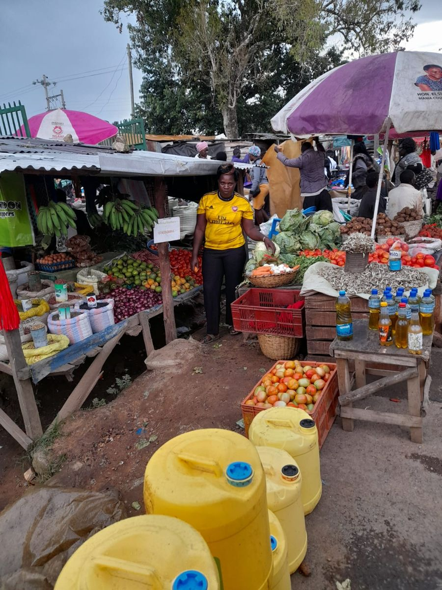

Our Shop

Our stall at Lubao Market. Come and see the freshness yourself.
Today's Prices
Prices last updated: 29 October 2026
Fresh Choices. Quality You Can Trust. Your trusted destination for fresh fruits, quality vegetables, and everyday grocery essentials at Lubao Market.
Order on WhatsApp
Our stall at Lubao Market. Come and see the freshness yourself.
Prices last updated: 29 October 2026